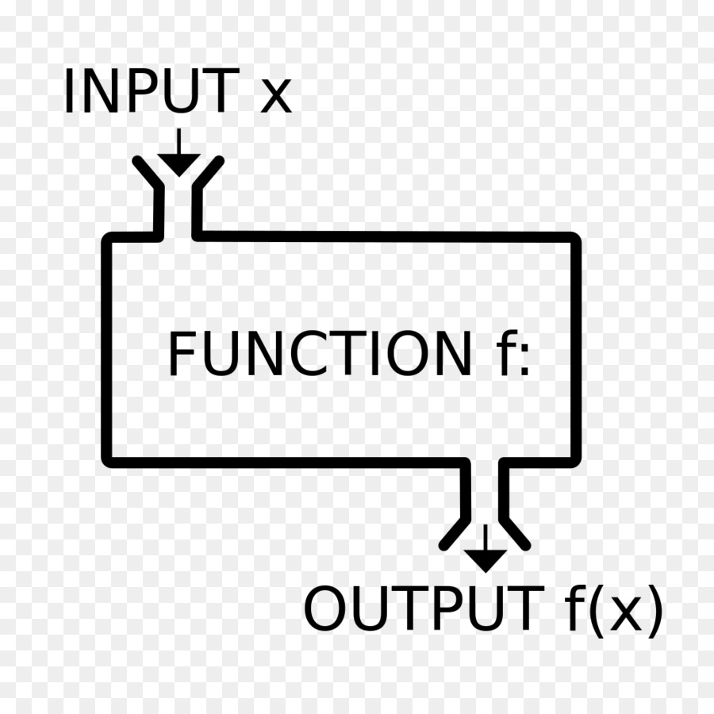
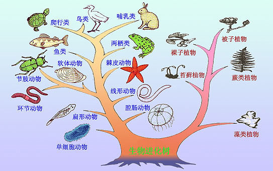
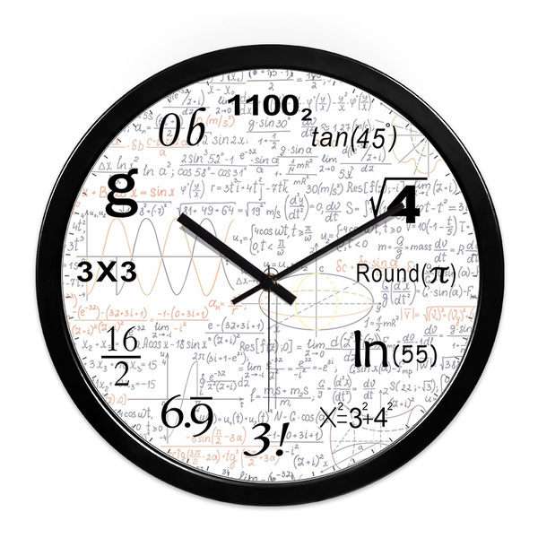
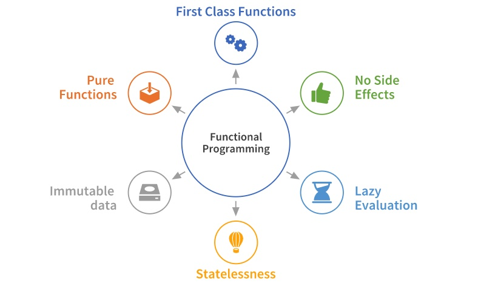

1. 函数式编程
在编程世界中向来就没有一家独大的编程风格,至少目前还是百家争鸣的春秋战国,除了众所周知的面向对象编程还有日渐流行的函数式编程,当然这也是本系列文章的重点.
越来越多的主流语言在设计的时候几乎无一例外都会参考函数式特性( lambda 表达式,原生支持 map,reduce...）,就连面向对象语言的 Java8 也慢慢开始支持函数式编程,所以再不学习函数式编程可能就晚了!

但是在正式学习函数式编程之前,不妨和早已熟悉的面向对象编程心底里做下对比,通过对比学习的方式,相信你一定会收获满满,因此特地整理出来关于 Go 语言的面向对象系列文章,邀君共赏.
- 猜猜看go是不是面向对象语言？能不能面向对象编程？
- go 学习笔记之详细说一说封装是怎么回事
- go 学习笔记之是否支持以及如何实现继承
- go 学习笔记之万万没想到宠物店竟然催生出面向接口编程?
- go 学习笔记之无心插柳柳成荫的接口和无为而治的空接口
上述系列文章讲解了
Go语言面向对象相关知识点,如果点击后没有自动跳转,可以关注微信公众号「雪之梦技术驿站」查看历史文章,再次感谢你的阅读与关注.
1.1. 生物学家和数学家的立场不同
虽然是同一个世界,但是不同的人站在各自立场看问题,结果自然会千人千面,各有不同.
生物学家会下意识对动植物进行分类归纳,面向对象编程也是如此,用一系列的抽象模型去模拟现实世界的行为规律.

数学家向来以严谨求学著称,作为最重要的基础科学,数学规律以及归纳演绎方法论对应的就是函数式编程,不是模拟现实而是描述规律更有可能创造规律.

标准的函数式编程具有浓厚的数学色彩,幸运的是,Go 并不是函数式语言,所以也不必受限于近乎苛责般的条条框框.
简单来说,函数式编程具有以下特点:
- 不可变性: 不用状态变量和可变对象
- 函数只能有一个参数
- 纯函数没有副作用

摘自维基百科中关于函数式编程中有这么一段话:
In computer science, functional programming is a programming paradigm—a style of building the structure and elements of computer programs—that treats computation as the evaluation of mathematical functions and avoids changing-state and mutable data.
上述的英文的大致意思是说:函数式编程将计算机程序看成是数学函数的推演,不用状态变量也不用可变对象来表达数与数之间的关系.
如需了解详情,可点击访问维基百科关于函数式编程 Functional programming 的相关介绍.
函数式编程的立足点和出发点是函数,复杂函数是基本函数经过一定组合规律形成的,所以描述复杂函数的过程就是如何拆解重组的过程.
所以接下来我们一边复习一边学习函数的基本特点,为接下来理解函数式编程打下基础,关于函数的基础语言可参考 go 学习笔记之值得特别关注的基础语法有哪些
1.2. 函数的基础语法和高级特性
下面以最基本四则运算为例,贯穿全文讲解函数的基本语法和高级特性,力求做到知其然知其所以然.
func定义普通函数
eval 函数定义了加减乘除基本运算规则,若不支持操作类型则抛出异常,终止程序.
func eval(a, b int, op string) int {
var result int
switch op {
case "+":
result = a + b
case "-":
result = a - b
case "*":
result = a * b
case "/":
result = a / b
default:
panic("unsupported operator: " + op)
}
return result
}
测试未定义操作取余 % 运算时,则抛出异常,unsupported operator: % ,说明仅仅支持加减乘除基本运算.
func TestEval(t *testing.T) {
// 3 -1 2 0 unsupported operator: %
t.Log(
eval(1, 2, "+"),
eval(1, 2, "-"),
eval(1, 2, "*"),
eval(1, 2, "/"),
eval(1, 2, "%"),
)
}
- 多返回值定义标准函数
Go 语言和其他主流的编程语言明显不同的是,函数支持多返回值,通常第一个返回值表示真正结果,第二个返回值表示是否错误,这也是 Go 关于异常错误设计的独特之处.
如果正常返回,则表示没有错误,那么第一个返回值是正常结果而第二个返回值则是空
nil;如果异常返回,第一个返回值设计无意义的特殊值,第二个返回值是具体的错误信息,一般非nil.
func evalWithStandardStyle(a, b int, op string) (int, error) {
switch op {
case "+":
return a + b, nil
case "-":
return a - b, nil
case "*":
return a * b, nil
case "/":
return a / b, nil
default:
return 0, fmt.Errorf("unsupported operator: %s", op)
}
}
改造 eval 函数以编写真正 Go 程序,此时再次测试,结果显示遇到没有定义的操作符时不再抛出异常而是返回默认零值以及给出简短的错误描述信息.
func TestEvalWithStandardStyle(t *testing.T) {
// Success: 2
if result, err := evalWithStandardStyle(5, 2, "/"); err != nil {
t.Log("Error:", err)
} else {
t.Log("Success:", result)
}
// Error: unsupported operator: %
if result, err := evalWithStandardStyle(5, 2, "%"); err != nil {
t.Log("Error:", err)
} else {
t.Log("Success:", result)
}
}
- 其他函数作为参数传入
上例通过多返回值解决了遇到不支持的运算符会报错终止程序的问题,但是并没有真正解决问题,假如真的想要进行非预定义的运算时,同样是无能为力!
谁让你只是使用者而不是设计者呢!
那么舞台交给你,你就是主角,你想要怎么处理输入怎么输出就怎么处理,全部逻辑转移给使用者,这样就不存在无法满足需求的情况了.
func evalWithApplyStyle(a, b int, op func(int, int) (int, error)) (int, error) {
return op(a, b)
}
操作符由原来的字符串
string更改成函数func(int, int) (int, error),舞台交给你,全靠自由发挥!
evalWithApplyStyle 函数内部直接调用函数参数 op 并返回该函数的处理结果,当前演示示例中函数的控制权完全转移给函数入参 op 函数,实际情况可按照实际需求决定如何处理 evalWithApplyStyle 逻辑.
func divide(a, b int) (int, error) {
return a / b, nil
}
func mod(a, b int) (int, error) {
return a % b, nil
}
自己动手,丰衣足食,顺手定义除法 divide 和取余 mod 运算,接下来测试下实现效果.
func TestEvalWithApplyStyle(t *testing.T) {
// Success: 2
if result, err := evalWithApplyStyle(5, 2, divide); err != nil {
t.Log("Error:", err)
} else {
t.Log("Success:", result)
}
// Success: 1
if result, err := evalWithApplyStyle(5, 2, mod); err != nil {
t.Log("Error:", err)
} else {
t.Log("Success:", result)
}
}
测试结果很理想,不仅实现了减加乘除等基本运算,还可以实现之前一直没法实现的取余运算!
这说明了这种函数作为参数的做法充分调动劳动人民积极性,妈妈再也不用担心我无法实现复杂功能了呢!
- 匿名函数也可以作为参数
一般而言,调用函数时都是直接用函数名进行调用,单独的函数具有可复用性,但如果本就是一次性函数的话,其实是没必要定义带函数名形式的函数.
依然是上述例子,这一次对两个数的运算规则不再是数学运算了,这一次我们来比较两个数的最大值,使用匿名函数的形式进行实现.
func TestEvalWithApplyStyle(t *testing.T) {
// Success: 5
if result, err := evalWithApplyStyle(5, 2, func(a int, b int) (result int, e error) {
if a > b {
return a, nil
}
return b, nil
}); err != nil {
t.Log("Error:", err)
} else {
t.Log("Success:", result)
}
}
- 函数的返回值可以是函数
依然是上述示例,如果由于原因不需要立即返回函数的计算结果而是等待使用者自己觉得时机合适的时候再计算返回值,这时候函数返回值依然是函数就很有作用了,也就是所谓的惰性求值.
func evalWithFunctionalStyle(a, b int, op func(int, int) (int, error)) func() (int, error) {
return func() (int, error) {
return op(a, b)
}
}
上述函数看起来可能有点难以理解,实际上相对于上例仅仅更改了返回值,由原来的 (int, error) 更改成 func() (int, error) ,其余均保持不变哟!
evalWithFunctionalStyle 函数依然是使用者的主场,和上例相比的唯一不同之处在于,你的主场你做主,什么时候裁判完全自己说了算,并不是运行后就立马宣布结果.
func pow(a, b int) (int, error) {
return int(math.Pow(float64(a), float64(b))),nil
}
func TestEvalWithFunctionalStyle(t *testing.T) {
ef := evalWithFunctionalStyle(5, 2, pow)
time.Sleep(time.Second * 1)
// Success: 25
if result, err := ef(); err != nil {
t.Log("Error:", err)
} else {
t.Log("Success:", result)
}
}
time.Sleep(time.Second * 1) 演示代码代表执行 evalWithFunctionalStyle 函数后可以不立即计算最终结果,等待时机合适后由使用者再次调用 ef() 函数进行惰性求值.
// 1 1 2 3 5 8 13 21 34 55
// a b
// a b
func fibonacci() func() int {
a, b := 0, 1
return func() int {
a, b = b, a+b
return a
}
}
- 函数可以充当类型
上述示例中讲解了函数可以作为返回值,参数有函数,返回值也有参数,所以 evalWithFunctionalStyle 函数看起来比较费劲,而 Go 语言的类型别名就是为了简化而生的,更何况函数是 Go 中的一等公民,当然也适合了.
func evalWithFunctionalStyle(a, b int, op func(int, int) (int, error)) func() (int, error) {
return func() (int, error) {
return op(a, b)
}
}
于是打算把入参函数 func(int, int) (int, error) 和返回值函数 func() (int, error) 进行统一,而入参函数和返回值函数唯一不同之处就是入参个数不同,所以顺理成章想到了 Go 函数中的不定长参数相关语法.
type generateIntFunc func(base ...int) (int, error)
这样入参函数和出参函数都可以用 generateIntFunc 类型函数进行替代,接着改造 evalWithFunctionalStyle 函数.
func evalWithObjectiveStyle(a, b int, op generateIntFunc) generateIntFunc {
return func(base ...int) (i int, e error) {
return op(a, b)
}
}
改造后的 evalWithObjectiveStyle 函数看起来比较简洁,花花架子中看是否中用还不好说,还是用测试用例说话吧!
func TestEvalWithObjectiveStyle(t *testing.T) {
ef := evalWithObjectiveStyle(5, 2, func(base ...int) (int,error) {
result := 0
for i := range base {
result += base[i]
}
return result,nil
})
time.Sleep(time.Second * 1)
// Success: 7
if result, err := ef(); err != nil {
t.Log("Error:", err)
} else {
t.Log("Success:", result)
}
}
函数别名进行类型化后并不影响功能,依然是函数式编程,不过夹杂了些面向对象的味道.
- 类型化函数可以实现接口
函数通过别名形式进行类型化后可以实现接口,某些程度上可以视为一种类型,因此实现接口也是顺理成章的事情.
func (g generateIntFunc) String() string {
r,_ := g()
return fmt.Sprint(r)
}
此处示例代码中为类型化函数
generateIntFunc实现String接口方法,可能并没有太大实际意义,仅仅是为了讲解这个知识点而硬凑上去的,实际情况肯定会有所不同.
func TestEvalWithInterfaceStyle(t *testing.T) {
ef := evalWithObjectiveStyle(5, 2, func(base ...int) (int,error) {
result := 0
for i := range base {
result += base[i]
}
return result,nil
})
time.Sleep(time.Second * 1)
// String: 7
t.Log("String:", ef.String())
// Success: 7
if result, err := ef(); err != nil {
t.Log("Error:", err)
} else {
t.Log("Success:", result)
}
}
惰性求值获取的函数变量 ef 此时可以调用 String 方法,也就是具备对象化能力,得到的最终结果竟然和直接运行该函数的值一样?
有点神奇,目前还不理解这是什么操作,如果有 Go 语言的大佬们不吝赐教的话,小弟感激不尽!
- 水到渠成的闭包
函数的参数,返回值都可以是另外的函数,函数也可以作为引用那样传递给变量,也存在匿名函数等简化形式,除此之外,类型化后的函数还可以用来实现接口等等特性应该足以阐释一等公民的高贵身份地位了吧?
如此强大的函数特性,只要稍加组合使用就会拥有强大的能力,并且 Go 语言并不是严格的函数式语言,没有太多语法层面的限制.
// 1 1 2 3 5 8 13 21 34 55
// a b
// a b
func fibonacci() func() int {
a, b := 0, 1
return func() int {
a, b = b, a+b
return a
}
}
斐波那契数列函数 fibonacci 的返回值是真正的生成器函数,每次调用都会生成新的斐波那契数字.
这就是 Go 语言实现闭包的一种简单示例,fibonacci 函数本身的变量 a,b 被内部匿名函数 func() int 所引用,而这种引用最终被使用者不断调用就会导致最初的 a,b 变量一直被占用着,只要继续调用这种生成器,裴波那契数列的数字就会一直递增.
// 1 1 2 3 5 8 13 21 34 55
func TestFibonacci(t *testing.T) {
f := fibonacci()
for i := 0; i < 10; i++ {
fmt.Print(f(), " ")
}
fmt.Println()
}
func TestFibonacci(t *testing.T) {
f := fibonacci()
for i := 0; i < 10; i++ {
fmt.Print(f(), " ")
}
fmt.Println()
}

1.3. 函数式编程入门函数总结
- 函数是一等公民,其中函数参数,变量,函数返回值都可以是函数.
- 高阶函数是普通函数组合而成,参数和返回值可以是另外的函数.
- 函数是函数式编程的基础,支持函数式编程但并不是函数式语言.
- 没有纯粹函数式编程的条条框框,更加灵活自由,良好的可读性.